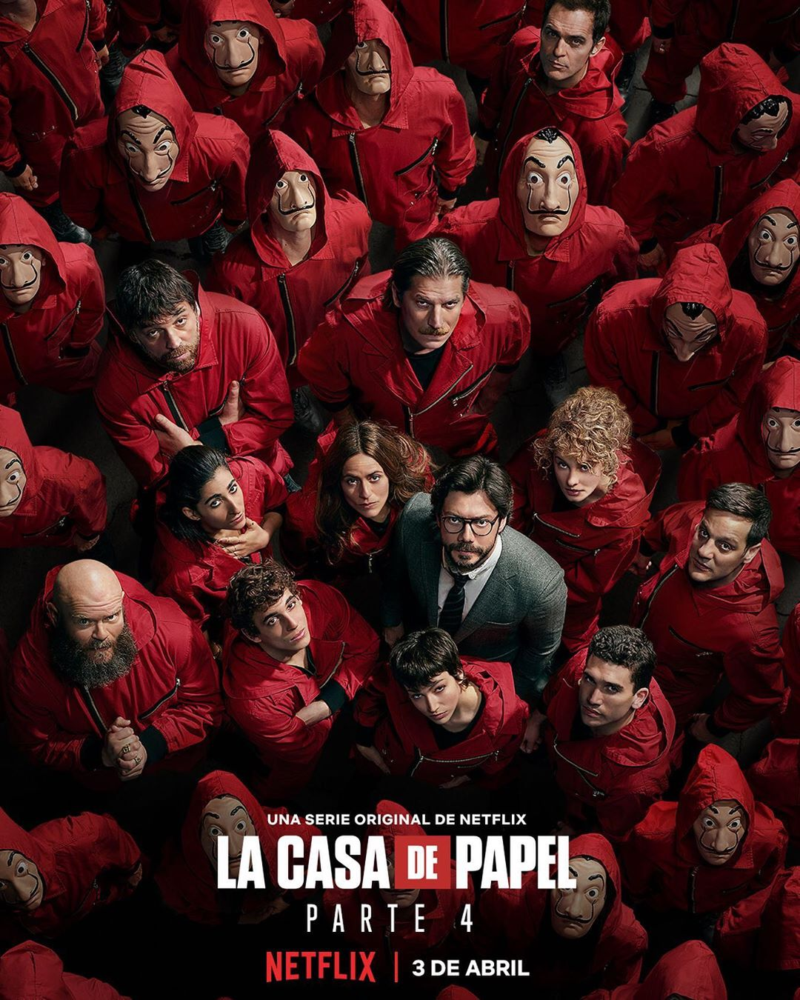
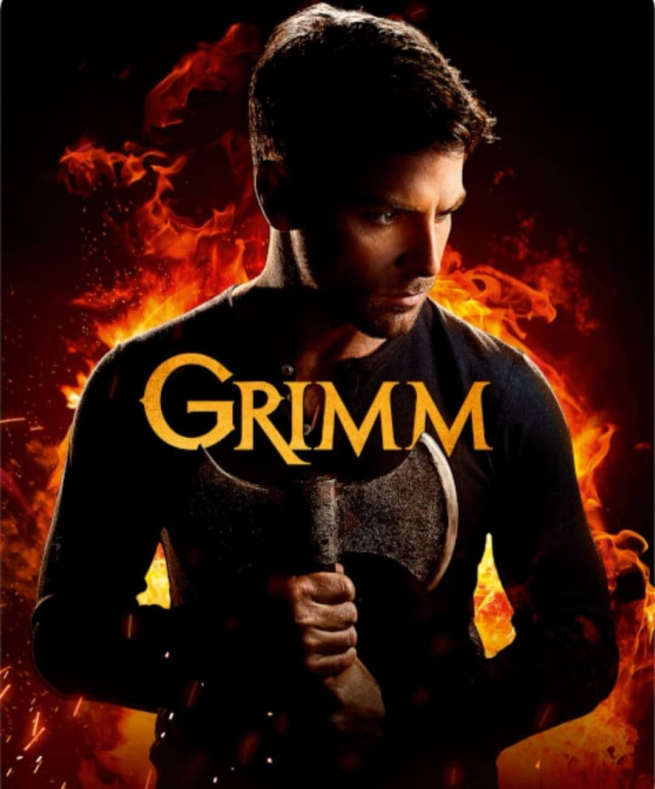
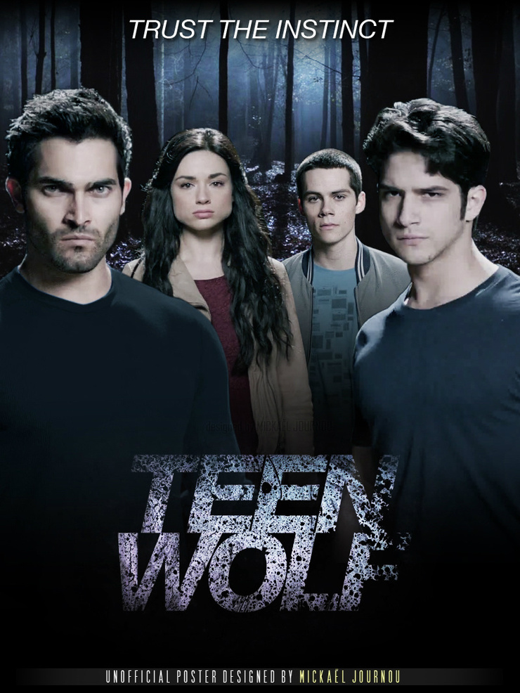
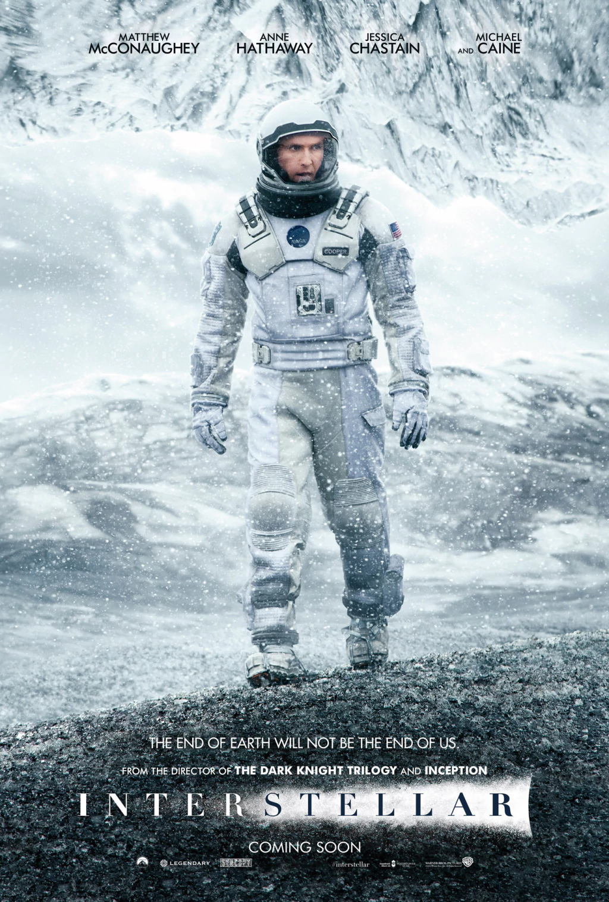
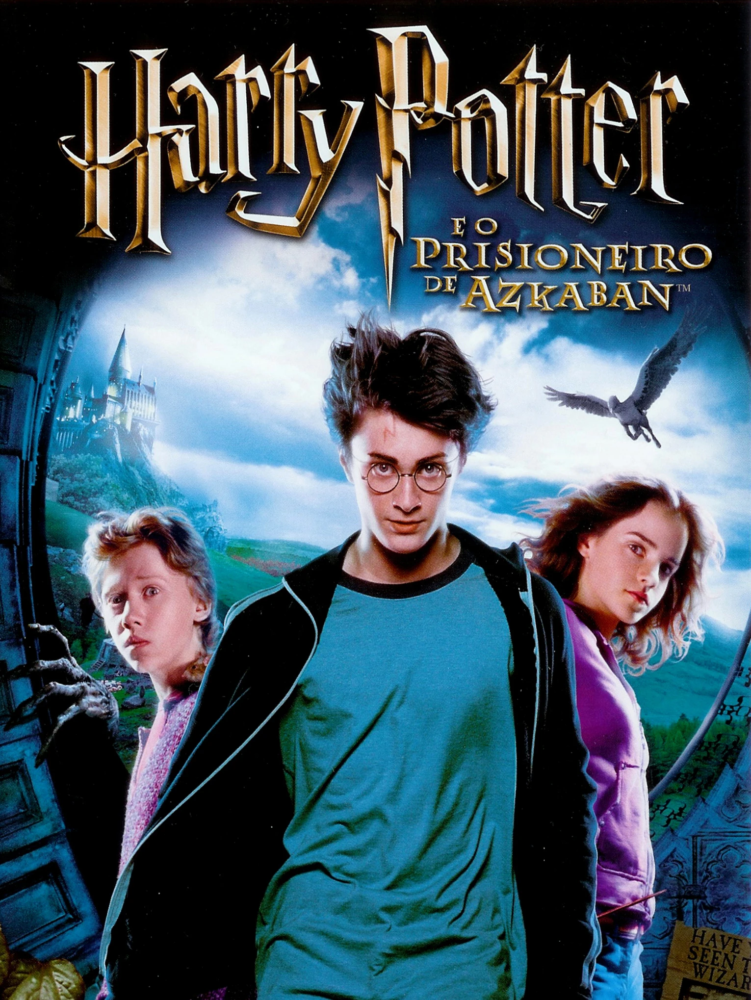
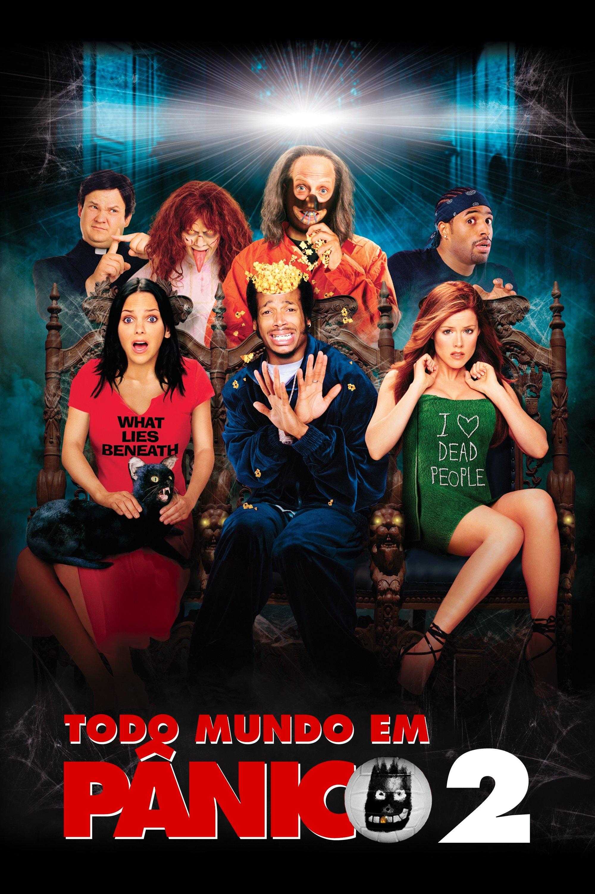
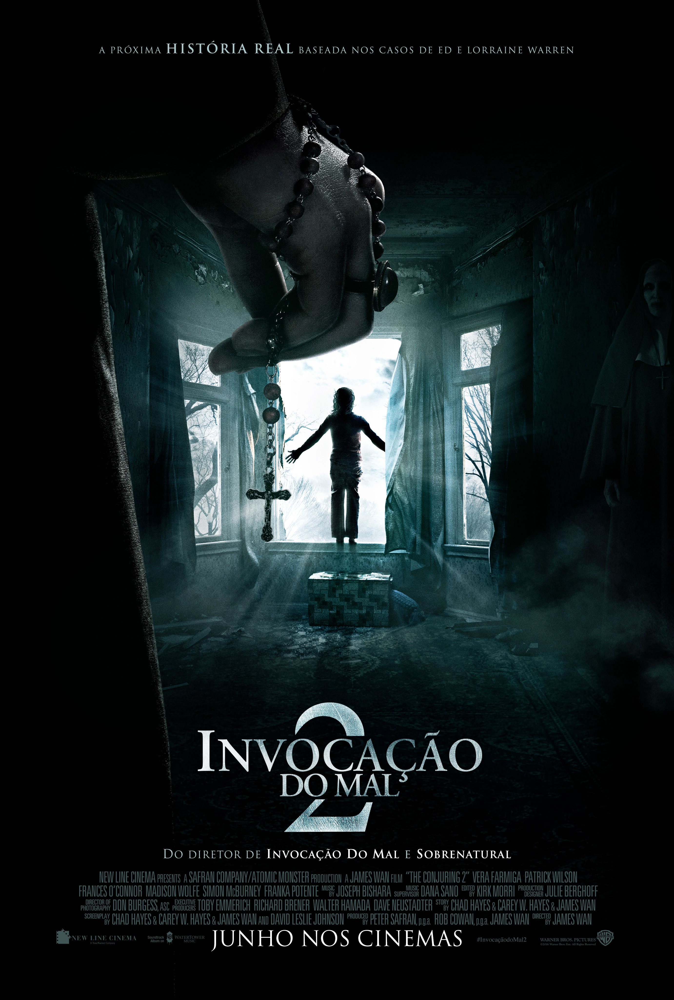

Ranking de Séries e Filmes
Prepare a pipoca! Reunimos nossas séries e filmes favoritos para você conhecer cada item dos nossos rankings.
Top Séries
-
O Mentalista

Poster oficial de O Mentalista Ocupa o 1º lugar porque a inteligência e o carisma do protagonista resolvem os casos de forma brilhante, prendendo a atenção do início ao fim.
Saiba mais -
La Casa de Papel

Cena icônica com as máscaras de Salvador Dalí O 2º lugar é merecido pelo roteiro dinâmico e os planos de assalto geniais que deixam qualquer um na beira do sofá.
Saiba mais -
Grimm

Arte promocional de Grimm Fica em 3º lugar por sua criatividade em adaptar contos de fadas clássicos para um ambiente de investigação policial sombrio.
Saiba mais -
The Vampire Diaries

Os irmãos Salvatore e Elena Garante o 4º lugar pelo intenso triângulo amoroso e a mitologia envolvente que marcou uma geração.
Saiba mais -
Teen Wolf

Elenco principal de Teen Wolf Em 5º lugar, a série se destaca por misturar humor adolescente com suspense sobrenatural de forma divertida.
Saiba mais


Top Filmes
-
Interestelar

Pôster de Interestelar Ocupa o 1º lugar por combinar aventura espacial, emoção e uma história envolvente, criando uma experiência marcante do início ao fim.
Saiba mais -
O Diabo Veste Prada 2

Pôster de O Diabo Veste Prada 2 Fica em 2º lugar por trazer novamente o universo da moda e das relações profissionais em uma história que chama a nossa atenção.
Saiba mais -
Harry Potter e o Prisioneiro de Azkaban

Pôster de Harry Potter e o Prisioneiro de Azkaban Está em 3º lugar por ampliar o universo mágico da série e apresentar uma história mais misteriosa, com momentos muito marcantes.
Saiba mais -
Todo Mundo em Pânico 2

Pôster de Todo Mundo em Pânico 2 Garante o 4º lugar pelo humor exagerado e pelas paródias de filmes de terror, sendo uma escolha divertida para assistir no tempo livre.
Saiba mais -
Invocação do Mal 2

Pôster de Invocação do Mal 2 Fecha o Top 5 por criar uma atmosfera de suspense e terror que mantém a tensão durante a história.
Saiba mais